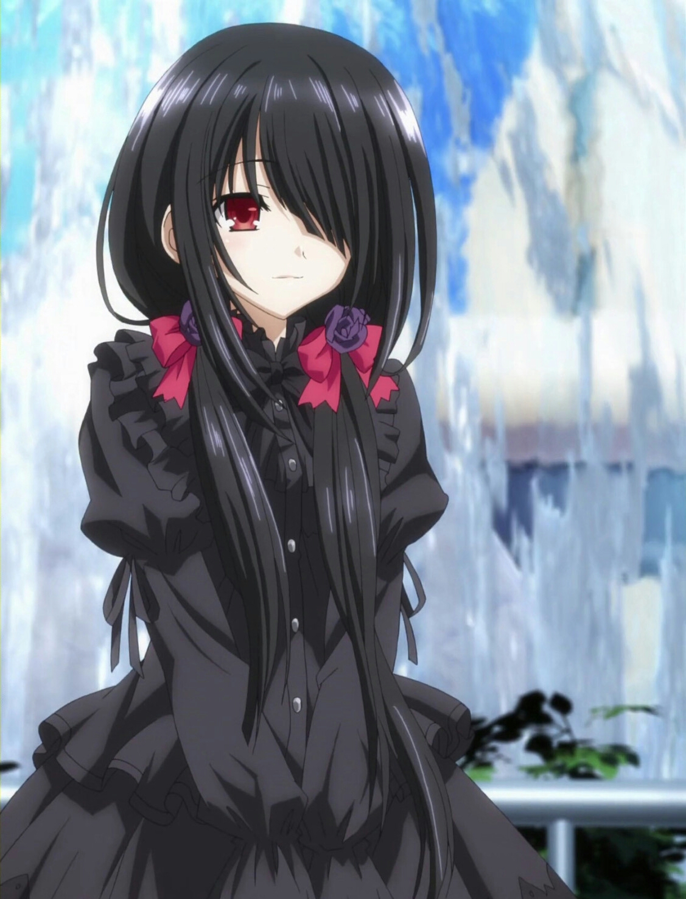

~Traje Astral~
El vestido astral de Kurumi se caracteriza por tener patrones de color carmesí y negro combinado con unas botas largas con una cinta en forma de mariposa, el cual le da una apariencia de "lolita gótica"; ademas cuando lo lleva puesto, lleva sus coletas de forma desigual. Para atar su cabello, Kurumi emplea en su vestido astral una red de color rojo sobre su cabeza.
APARIENCIA

Descripcion
una chica con una belleza extraordinaria", su piel usualmente se describe como "tan blanca como la porcelana" y su cabello es de color negro, el cual siempre lleva atado en dos coletas de la misma longitud. Su ojo derecho es de un intenso color rojo, mientras que su ojo izquierdo es de color dorado y en él se manifiesta un reloj de apariencia inorgánica, el cual cubre con su flequillo izquierdo cuando no manifiesta sus poderes.
Personalidad
La personalidad de Kurumi no es sencilla de determinar, al igual que muchos otros espíritus, ella sentía una gran aversión por los humanos cuando apareció por primera vez en la historia. Es muy hábil actuando, ya que puede tomar el rol de una joven dulce y amable sin que los demás se den cuenta de sus verdaderas intenciones, lo cual se hizo evidente cuando se matriculó en Raizen y se presentó en la clase de Shido, haciendo que los estudiantes se deslumbraran tanto por su belleza como por su encanto.
Angel ~Zafkiel~
Zafkiel es el ángel de Kurumi, el cual es manifestado como un reloj gigantesco detrás de Kurumi conectado a su vez a su ojo izquierdo. Además de tener dos pistolas de distinto tamaño, las cuales representan las manecillas del reloj. Zafkiel le permite a kurumi utilizar 12 clases de balas, cada bala posee una habilidad relacionada con la manipulación del tiempo/espacio.
PODERES Y HABILIDADES
Dato Curioso.. ;3
Kurumi fue la primer antagonista presentada en la historia, pasando posteriormente a tomar un papel neutral hasta finalmente haberse convertido en una aliada de los personajes principales.
Ella Viaja En
El Espacio &
El Tiempo
Arregla Todo
Viajando Al Pasado
Si Algo Falla
Manda A Shido Al Pasado
Ella Puede
Ver Tu Pasado
Ella Es
Muy Valiosa
Y Peligrosa
Kurumi tiene la capacidad de manipular principalmente el tiempo, pero su poder principal está asociado con el control de las sombras. La sombra es su elemento principal, mientras que el tiempo es su elemento secundario en términos de uso. Combinado con el poder de la octava bala, puede crear un clon que tenga todas sus experiencias, recuerdos, habilidades, etc. Estos clones pueden tomar la forma de largas manos blancas con trazos rojos cuando están en las sombras de Kurumi. Sin embargo, como estos son sus seres pasados, a veces pueden contener sentimientos que la Kurumi actual ya no posee y debido a ello, Kurumi no dudará en matar a estos clones si eligen desobedecerla.
Zafkiel
Su ángel es muy poderoso, cada vez que usa sus habilidades, consume un poco de su tiempo (fuerza de vida).